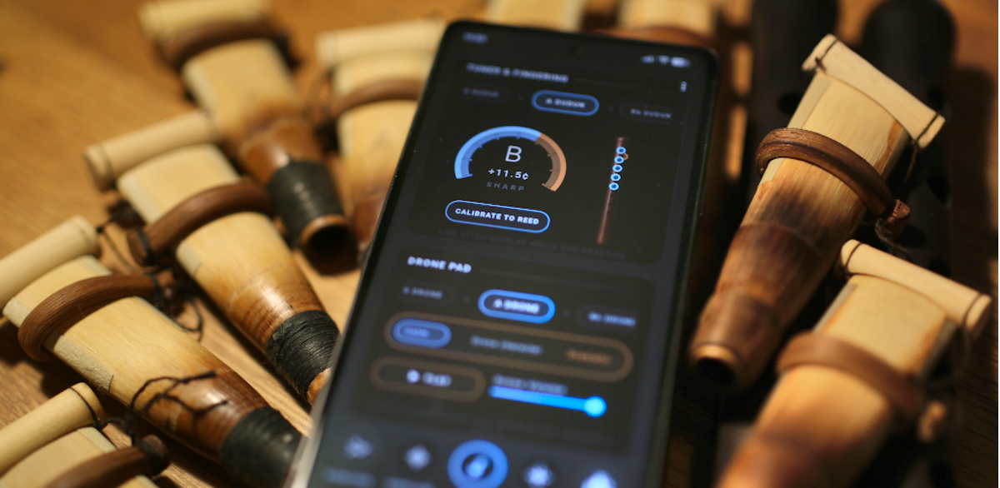
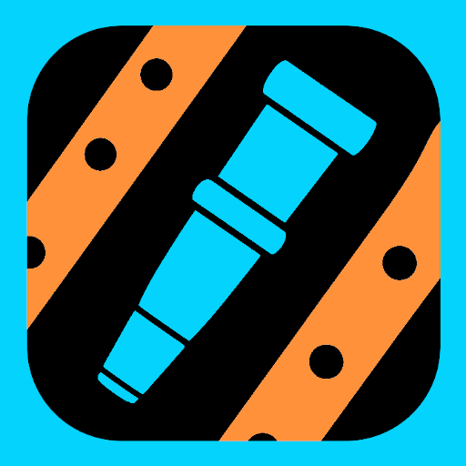
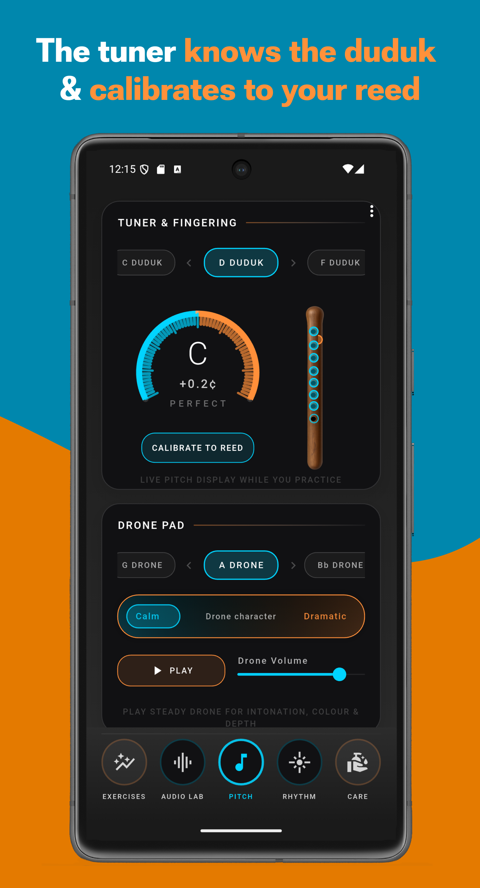
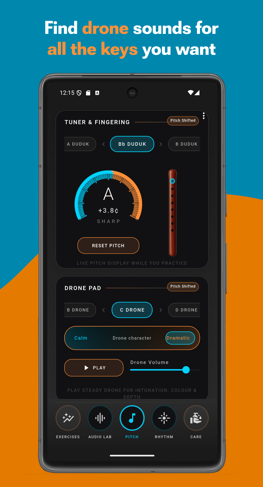
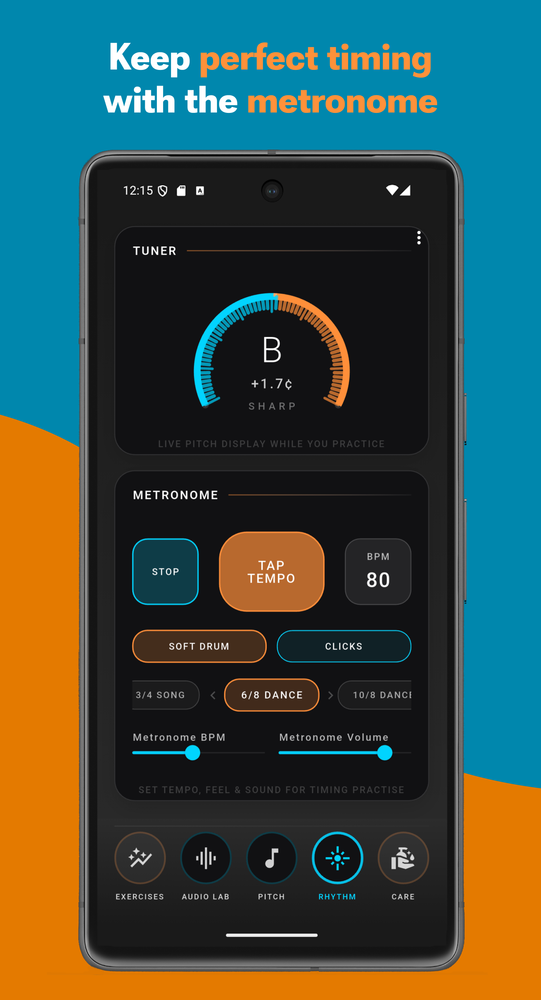
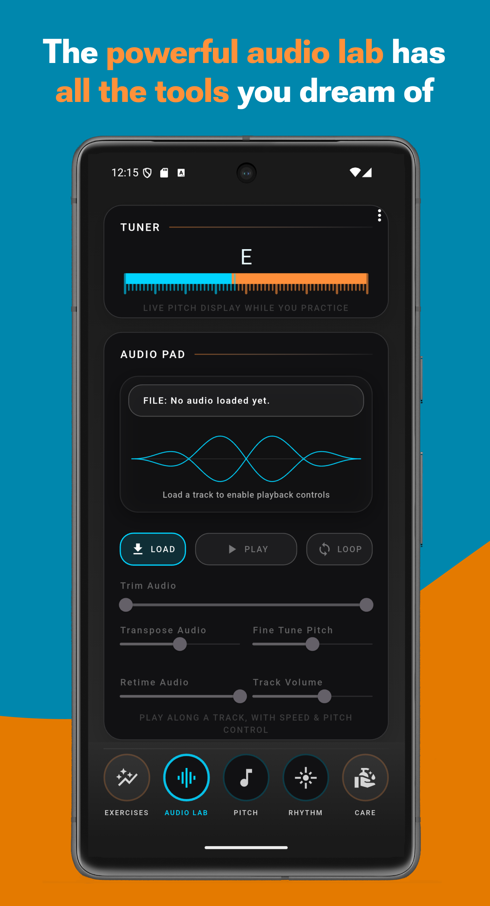
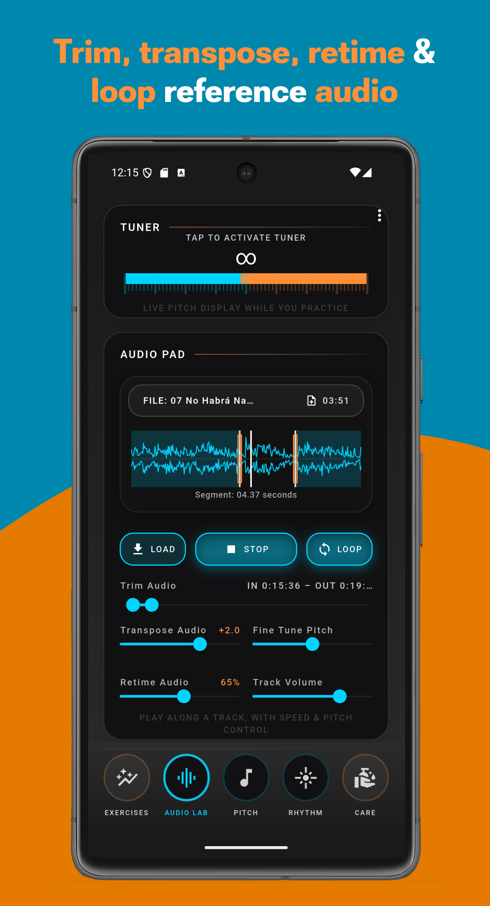
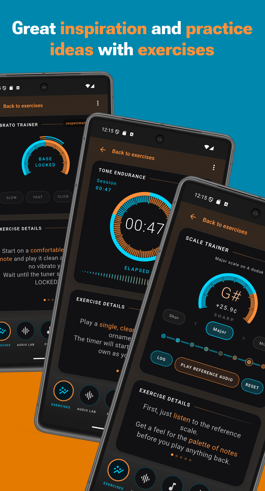
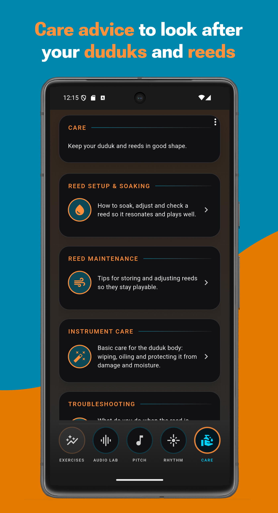

Your practice companion app for Armenian duduk.
Tuner, drones, metronome and audio lab – built specifically for the Armenian duduk. On your phone or tablet.
Available now on iPhone and Android.

DudukPro
Tuner, drones, metronome and audio lab – built specifically for the Armenian duduk. On your phone or tablet.
Available now on iPhone and Android.
Most duduk players end up using a mix of generic tools and devices: one app or device for tuning, another for rhythm, something else for studying songs and audio recordings, and something else again for playing background drones (dams).
DudukPro brings those core practice tools together in one place, one app made specifically for the Armenian duduk.
Tuner, drones, metronome, and instrument care advice are all together, so you do not have to jump between different apps and devices.
Load a track, trim the phrase you want, slow it down, transpose and loop – ideal for learning by ear, one phrase at a time.
DudukPro gives you a choice of duduk keys and allows reed calibration, so the tuner can be adjusted to the actual instrument (reed) you are playing. If your reed is a little sharp or flat, you can calibrate the tuner to match it - and get a clear tuner reading even when your instrument is not perfectly in tune.

The drones sound provided by DudukPro are more than just reference notes. They give your duduk practice a rich background sound to blend with, whether you want calm steady drone sounds, or a more dark and dramatic feel. The recordings are kindly provided by Silvain Barou.

Set the tempo, choose from different rhythmic patterns, and use the metronome to develop steady, clean timing.

Work on specific phrases or parts of songs you want to study by trimming them to isolate the parts you want to focus on, by slowing down the audio playback, and transpose or change the pitch as needed to match your duduk's tuning.


Guided exercises for breathing, tone endurance, vibrato and scales help you turn “noodle time” into focused, structured practice. (The exercises included in the app are meant as inspiration only. They can not replace a teacher or proper learning material.)

Learn how to soak, adjust and test reeds, store and protect your instrument, and troubleshoot common problems – without getting lost in random forum threads.

Open DudukPro, choose your duduk key and calibrate to your reed so you know where you really are in pitch.
Practise long tones, scales and intervals over drones to stabilise your tone, intonation and colour.
Drop in a recording, isolate a phrase and slow it down. Loop, transpose and repeat until it’s in your fingers.
Yes. The app is designed specifically for the Armenian duduk, with tools and content tailored to this instrument.
The app interface is currently available in English, French, and German.
No. Once installed, DudukPro works fully offline. You only need a connection to download the app or updates.
No. DudukPro is a practice companion – it helps you make your own practice time more focused and less frustrating, alongside real teachers and musicians.